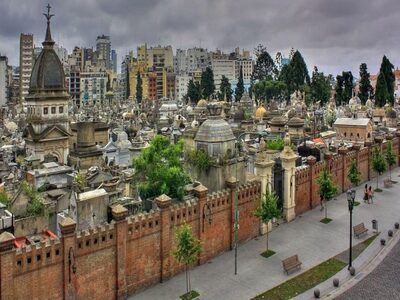

History for Recoleta
By web page Recoleta Buenos Aires
Its name comes from the Convent of the Recoletos Fathers, originally from France, members of the Franciscan Order that settled in the area at the beginning of the 18th century, founding a convent and a church dedicated to Nuestra Señora del Pilar and attached to it the cemetery. The Paseo de la Recoleta is almost the geographical center of the neighborhood, and one of its highest points, so at the end of the 19th century the place attracted wealthy families from the south of the city, who were fleeing the yellow fever epidemic. . Since then it has been one of the most elegant and expensive neighborhoods in Buenos Aires, housing family mansions, embassies and luxury hotels.
Plazoleta de la Recoleta in 1867. In the image you can see the Cemetery and the Basilica Nuestra Señora del Pilar. The historic nucleus of this neighborhood was the Pilar parish church, whose construction was completed in 1732; for that reason the neighborhood was sometimes called El Pilar. The church was originally located on the edge of the ravines that fell to the Río de la Plata and the Manso stream. The stream, also called Tercero del Norte; today it is piped and runs below the current Pueyrredón avenue. It formed a kind of delta, with arms through the current Austria and Tagle streets, which eventually flowed into the Río de la Plata.
When Buenos Aires suffered the great yellow fever epidemic in the 1870s, the population was deconcentrated to avoid contagion. It was for this reason that, while the popular classes settled in the south-southeast of the city, the upper classes did so in Recoleta, where the height of the land decreased the presence of disease-transmitting insects. These families, considered of lineage, as they descended from prominent figures during the independence period, built mansions and large French-style buildings in the neighborhood (many of them demolished towards the end of the 1950s and the beginning of the 1960s). For this reason, Buenos Aires has been referred to as the Paris of America. Today, some of these traditional buildings coexist with elegant more modern buildings.

Along with some sectors of the neighboring neighborhoods of Retiro and Palermo, Recoleta is part of the area known as Barrio Norte, a traditional place of residence for the wealthiest sectors of society where a good part of the cultural life of the city is concentrated. Read full article in Spanish
cementery of recoleta
By web page Recoleta Buenos Aires
The Recoleta Cemetery is one of the main tourist attractions in the neighborhood. It was designed by the French Prosper Catelin, at the initiative of President Bernardino Rivadavia, and inaugurated in 1822. It is located next to the old convent of the Recollect Fathers. It is an extraordinary sample of funerary architecture from the 19th and early 20th centuries, with family vaults and vaults of the bourgeoisie and the former ranchers. In it are the remains of numerous protagonists of Argentine history, among them Eva Perón to whose grave tourists, neighbors and militants of all currents of Peronism pilgrimage daily, the illustrious Ovidio Rebaudi chemist, writer, researcher, professor and scientist, multifaceted character of the Buenos Aires culture. There are also the tombs of the presidents of the nation Nicolás Avellaneda, Bartolomé Miter, Manuel Quintana, Domingo Faustino Sarmiento, Carlos Pellegrini, Hipólito Yrigoyen, Arturo Umberto Illia and Raúl Alfonsín and of the dictator Pedro Eugenio Aramburu. Today the cemetery is the place with the highest density of sculptures in the world. Read full article in Spanish